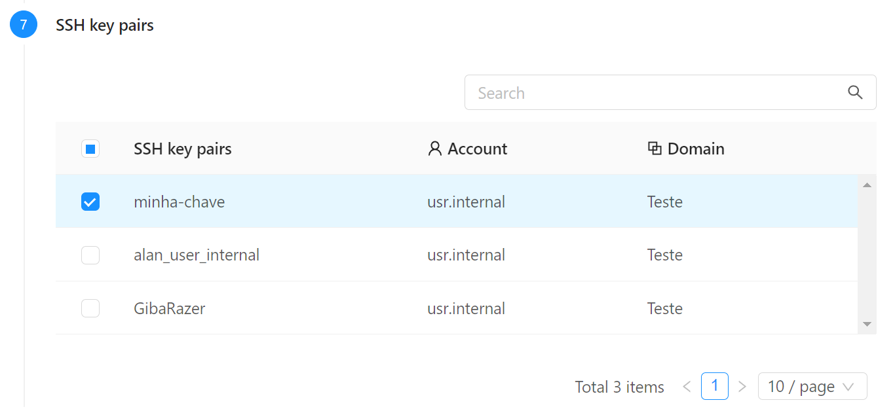
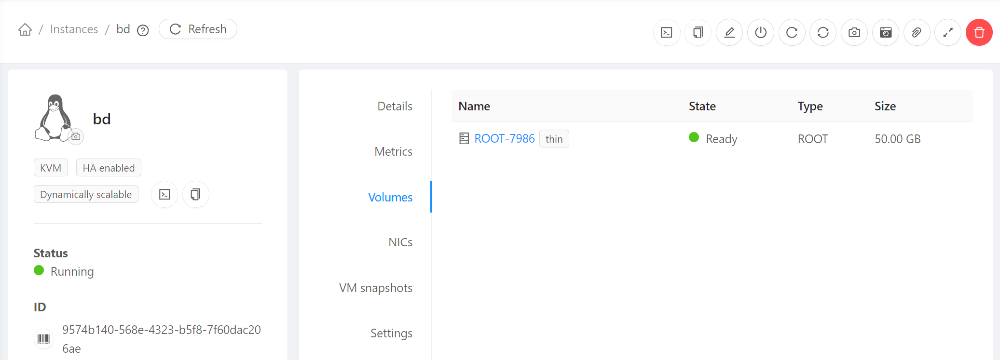
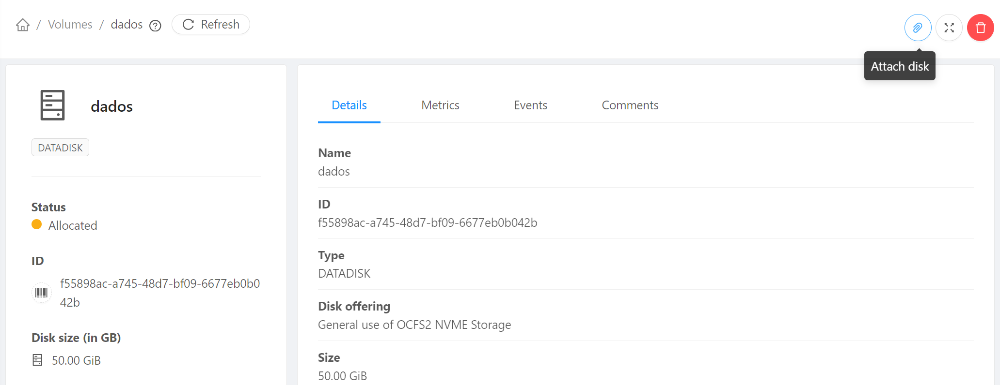
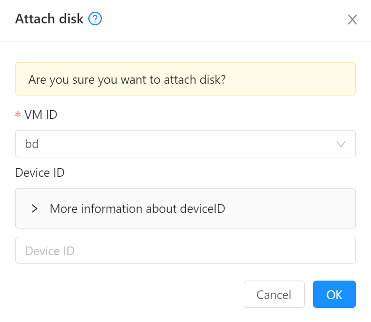
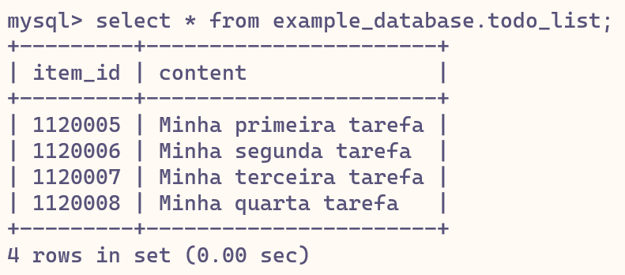

DR e Snapshots
Neste passo demonstraremos como usar Snapshots e VM Snapshots para diversos cenários de DR.
Usaremos como exemplo um servidor de banco de dados MySQL.
Utilizaremos alguns recursos criados nos passo anteriores, Compute e Networking e User-data. Execute-os se ainda não o fez.
Banco de dados
Para suportar a aplicação que criaremos a seguir, precisamos de um banco de dados, que criaremos conforme segue:
Criação da instância
- No menu de navegação à esquerda clique em Compute, Instances
- Clique no botão Add instance +
- Em Templates, escolha Community, digite ubuntu na busca e escolha Ubuntu Server 22.04

- Em Compute offering escolha micro
- Em Data disk mantenha No thanks
- Em Networks escolha a rede que criou, minha-rede
- Em SSH key pairs escolha a chave criada no passo anterior, por exemplo, minha-chave 
- Habilite Show advanced settings e, em Stored Userdata, selecione o user data criado na seção anterior, mysql
- Coloque o nome bd e clique Launch instance
Port forwarding
Ao contrário do Static NAT, o método de Port Forwarding permite a reutilização de um mesmo Endereço IP público para diferentes instâncias, em função da porta acessada.
Por exemplo, para acesso SSH podemos encaminhar a porta 22000 de um IP para a instância web, a porta 22001 do mesmo IP para bd e assim por diante.
Isso proporciona mais um nível de segurança além do firewall, porque sem um encaminhamento explícito a instância fica inacessível pela internet pública. É um bom caso de uso para a instância bd, para a qual precisamos abrir apenas a porta de SSH para fora da minha-rede.
Acesse a rede pré-criada (minha-rede) e clique sobre o primeiro IP da lista, que possui a nota source-nat ao lado dele. Anote o IP escolhido: 200.234.208.5
Clique na aba Firewall e crie a regra:
Source CIDR: 0.0.0.0/0; Start port: 22000; End port: 22099 (para aceitar conexões SSH num range de portas).
Acesse a aba Port forwarding e adicione as entradas:
- Private port: 22-22; Public port: 22000-22000; Protocol: TCP; botão Add...: web
- Private port: 22-22; Public port: 22001-22001; Protocol: TCP; botão Add...: bd

Info
Note como podemos usar portas externas distintas (22000 e 22001) como mesmo IP público para acessar serviços distintos (web e bd) que possuem a mesma porta (22) no back-end.
Acompanhamento da instalação
Agora acesse o servidor de banco de dados, lembrando de usar a porta 22001:
# Substitua o endereço IP abaixo pelo que foi configurado com port forwarding acima
ssh root@200.234.208.5 -p 22001
O servidor deverá executar as instruções do user data associado a ele, para instalação do MySQL e demais configurações. Acompanhe com os comandos:
cloud-init status # aguarde até obter 'status: done'
systemctl status mysql # aguarde até obter status do serviço 'running'
Tip
No nosso user data incluimos apt ugrade, que pode demorar um tempo. É possível acompanhar o andamento da instalação com o comando:
tail -f /var/log/cloud-init-output.log
Finalmente, para criar o banco:
mysql -u root -h localhost
Edite a senha abaixo e copie o comando no prompt do MySQL:
CREATE DATABASE 'example_database';
CREATE USER 'example_user'@'%' IDENTIFIED BY 'pass_bd';
GRANT ALL PRIVILEGES ON example_database.* TO 'example_user'@'%';
FLUSH PRIVILEGES;
CREATE TABLE example_database.todo_list (
item_id INT AUTO_INCREMENT,
content VARCHAR(255),
PRIMARY KEY(item_id)
);
Info
Embora estejamos permitindo conexões de example_user a partir de qualquer host, lembre que a rede (minha-rede) é isolada. Não havendo portas criadas em firewall nem forwarding para o MySQL, o servidor de banco permanece fechado a conexões da internet pública. A configuração acima permite acesso por qualquer servidor, desde que dentro da mesma rede.
Note, também, que o usuário root, por default, só permite conexões do próprio servidor (localhost)
Para preparar a VM para o snapshot, saia do prompt to MySQL com exit; e encerre o serviço para que escritas pendentes sejam gravadas em disco:
systemctl stop mysql
Snapshot de volume raiz
A seguir ilustrarmos o uso de snapshots do volume raiz para recuperação da VM.
Warning
Estamos fazendo snapshot apenas do volume da VM e não do estado da memória. Por isso encerramos o serviço para que dados não sejam perdidos.
- No menu de navegação à esquerda clique em Compute, Instances e selecione bd
- Na seção à direita clique em Volumes e selecione o volume raiz (ROOT-XXXX) 
- Ao abrir os detalhes do volume ROOT-XXXX clique em Take snapshot e escolha o nome snapshot-bd
- Confira que o snapshot com o nome escolhido, snapshot-bd foi criado clicando em Storage, Snapshots no menu de navegação à esquerda e aguarde até que esteja com status BackedUp.
- Agora simularemos um desastre, apagando a VM. Clique em Compute, Instances, selecione bd, clique em Destroy instance e habilite a opção Expunge


- A maneira de recuperar uma VM a partir de um disco raiz é, primeiro, criar um template a partir dele. Clique em Storage, Snapshots e selecione o snapshot-bd. Clique no botão Create template.
- Coloque nome e descrição template-bd, e OS type Ubuntu 22.04 LTS aceitando os demais parâmetros.
- Verifique que o template foi criado em Images, Templates
- Finalmente crie a instância a partir do template. Clique em Compute, Instances, Add instance +.
- Em Template/ISO escolha My templates, template-bd.
- Em Compute offering escolha micro
- Em Networks escolha minha-rede para colocar a instância na mesma rede que a web
- Em SSH key pairs escolha minha-chave cadastrada previamente.
- Em Name (Optional) coloque bd.
- Clique em Launch instance.
- Em Network, Public IP addresses, repita os passos descritos acima em Port forwarding para refazer o redirecionamento.
Acesse o servidor novamente:
ssh root@200.234.208.5 -p 22001
ssh-keygen -R "[200.234.208.5]:22001"
mysql -u root -h localhost
SHOW DATABASES;
USE example_database;
SHOW TABLES;
SELECT * FROM todo_list;
Info
Em resumo: Criamos um snapshot do volume raiz de uma instância, a partir do snapshot um template e, do template, uma nova instância:
Instância  snapshot template nova instância
snapshot template nova instância
Note, também, que não foi necessário configurar user data na nova instância pois as configurações já estavam no template.
VM Snapshot
Outro possível cenário de DR ocorre quando é preciso voltar a VM a um estado anterior, por exemplo, para reverter uma Change.
Continue logado no prompt do MySQL e execute:
USE example_database;
INSERT INTO todo_list (content) VALUES ("Minha primeira tarefa");
INSERT INTO todo_list (content) VALUES ("Minha segunda tarefa");
SELECT * FROM todo_list;
O estado da instância, incluindo armazenamento e memória, pode ser salvo num VM Snapshot, que funciona como uma fotografia. Este difere do snapshot anterior, que grava somente o conteúdo do volume de armazenamento.
- Em Compute, Instances, selecione bd e clique em Take VM snapshot (atenção, não confundir com Take VM volume snapshot ao lado):

- Escolha o nome e habilite as opções Snapshot memory e Quiesce VM:

- Após a criação do VM snapshot volte ao prompt do MySQL para simular uma operação destrutiva:
DELETE FROM todo_list; SELECT * FROM todo_list; - Em Storage, VM snapshots, selecione o VM snapshot criado e clique em Revert to VM snapshot:
 Reconecte-se ao servidor e execute os queries:
Para verificar que não somente os dados mas, também, o estado da instância foi restaurado no exato ponto em que foi feito o VM snapshot execute, por exemplo, o comando
Reconecte-se ao servidor e execute os queries:
Para verificar que não somente os dados mas, também, o estado da instância foi restaurado no exato ponto em que foi feito o VM snapshot execute, por exemplo, o comandoUSE example_database; SELECT * FROM todo_list;uptimeno shell, demonstrando que a instância parece ter uma tempo de vida mais longo do que o decorrido desde a recuperação.
Info
Em resumo: O VM snapshot permite reverter a instância ao estado em que ele foi produzido
Instância VM snapshot instância é alterada Revert to VM snapshot instância no estado inicial
Snapshot de volume anexado
Agora demonstraremos um outro cenário de DR onde usamos um volume específico de dados, separado da raiz da instância. No exemplo a seguir, tal volume é usado para armazenar dumps do MySQL que podem ser recuperados anexando um snapshot previamente salvo.
Obs. Antes de iniciar, apague o VM Snapshot criado em Storage, VM snapshots pois sua existência é incompatível com as operações a seguir.
- Acesse Storage, Volumes e Create volume +, preencha com nome dados, escolha Disk offering: data.disk.general e tamanho 50
- Clique no volume criado e em Attach disk 
- Escolha a instância bd para anexar o volume 
- No shell da instância bd execute:
E note que há uma nova partição
lsblkvdb. Formate-a com o comando:Para mapear uma pasta dados para a nova partição:mkfs.ext4 /dev/vdbEdite o arquivomkdir -p /dados/etc/fstab:Adicionando, ao final, a linha:nano /etc/fstabAo final, carregue a nova configuração com:/dev/vdb /dados ext4 defaults 0 2Verifique que a pasta dados está configurada com o comando:mount -aCuja saída deverá conter a linha:df -h/dev/vdb 49G 24K 47G 1% /dados - Verifique que a tabela example_database.todo_list continua populada:
mysql -u rootSELECT * FROM example_database.todo_list; - Volte ao shell (digitando
EXIT;no prompt to MySQL) e execute um backup para a pasta dados:Você pode verificar o conteúdo do dump com:mysqldump -u root example_database todo_list > /dados/dump-todo-list.sqlcat /dados/dump-todo-list.sql - De volta ao painel do CloudStack, na página do volume dados clique em Take snapshot, e dê o nome snapshot-dados:

- Simularemos agora que houve uma reinstalação do zero, com a tabela vazia e sem a presença da partição contendo o dump.
umount /dados mysql -u rootDELETE FROM example_database.todo_list; - Clique em Storage, Volumes e selecione o volume dados. Desconecte-o clicando em Detach disk.
 Em seguida, delete o volume dados clicando em Destroy volume (habilite Expunge).
Em seguida, delete o volume dados clicando em Destroy volume (habilite Expunge). - Agora damos início à recuperação. Usaremos o snapshot do volume dados salvo. Clique em Storage, Snapshots, snapshot-dados e selecione Create volume, dando o nome dados-restore.

- Finalmente, acesse Storage, Volumes, dados-restore, clique em Attach disk escolhendo a VM bd.
- Para remapear a partição à pasta dados:
A esta altura você pode verificar que o dump já está acessível:
mount -aPara recuperar o dump:ls /dadosmysql -u root example_database < /dados/dump-todo-list.sql mysql -u rootCom isso recuperamos o conteúdo da tabela.SELECT * FROM example_database.todo_list;
Info
Em resumo: O snapshot de uma partição de dados permite a recuperação destes reconstruindo a partição e reanexando-a à instância para carregamento.
Instância dump volume dados snapshot do volume dados gera volume dados-restore attach disk instância sem dados recuperação via importação
Tip
Note que, diferentemente do caso de snapshot de um volume raiz, não é necessário criar um template e depois uma nova instância. Basta criar o novo volume diretamente a partir do snapshot e anexá-lo a uma instância pre-existente.
Tip
A opção de snapshot de volumes pode ser automatizada via agendamentos, como você pode constatar no menu Storage, Volumes, nome_do_volume, ícone Recurring snapshots.
Observações
Vimos 3 formas diferentes de DR:
- Reconstrução de uma VM a partir de snapshot de volume raiz
- Reversão a um estado anterior através de VM snapshot. Pode ser útil, por exemplo, como plano de rollback de uma change.
- Importação de dados de backup via snapshot de volume anexado, rotina que pode ser automatizada via agendamento.